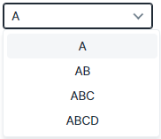
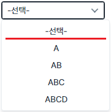
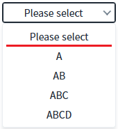
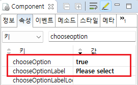

AutoComplete과 SelectBox의 'chooseOption' 속성과 'chooseOptionLabel' 속성을 사용하여 선택 항목을 표시하고 항목에 표시되는 문자열을 설정한 예제입니다.
'선택' 항목은 'chooseOption' 속성을 'true'로 설정하면 표시됩니다. 항목에 표시되는 문자열은 '-선택-'이 기본 값이며, 'chooseOptionLabel' 속성을 사용하여 변경할 수 있습니다.
AutoComplete과 SelectBox의 'changeChooseOption' 메소드를 사용하여 선택 항목을 설정할 수도 있습니다.
AutoComple의 chooseOption, chooseOptionLabel 속성 적용하기
SelectBox의 chooseotion, chooseOptionLabel 속성 적용하기
1
'chooseOption' 속성과 'chooseOptionLabel' 속성의 적용 여부에 따른 실행 결과를 비교합니다.
각 컴포넌트의 항목은 'A', 'AB', 'ABC', 'ABCD'로 동일하게 구성되어 있습니다.
'chooseOption' 속성이 'true'로 설정되지 않으면 첫 번째 항목인 'A' 항목이 최상단에 표시됩니다.
Image 1.브라우저(Chrome) 실행 예시 - 속성 'chooseOption' 미적용

'chooseOption' 속성이 'true'로 설정되고 'chooseOptionLabel' 속성이 설정되어 있지 않으면 선택 항목이 항목의 최상단에 표시되며 항목의 문자열은 '-선택-'으로 표시됩니다.
Image 2.브라우저(Chrome) 실행 예시 - 속성 'chooseOption' 적용

'chooseOption' 속성이 'true'로 설정되고 'chooseOptionLabel' 속성이 설정되면 선택 항목이 항목의 최상단에 표시되며 항목의 문자열은 'chooseOptionLabel' 속성에 설정한 문자열로 표시됩니다.
이 예제에서는 'chooseOptionLabel' 속성에 'Please select'이 설정되었으며, 선택 항목의 문자열이 'Please select'로 표시됩니다.
Image 3.브라우저(Chrome) 실행 예시 - 속성 'chooseOption', 'chooseOptionLabel' 적용

1
컴포넌트의 속성을 설정합니다.
[필수] chooseOption="true"
선택 항목을 표시하기 위한 필수 설정입니다.
[default: false, true] 선택 항목의 표시 여부
(옵션 설명)
true: 선택 항목을 표시합니다.
false: 선택 항목을 표시하지 않습니다.
[선택] chooseOptionLabel="설정 값"
선택 항목의 문자열을 설정합니다. 기본 값은 '-설정-' 입니다.
Image 4.웹스퀘어 스튜디오의 Component View 예시

Example 1.Source
<!-- AutoComplete 예시입니다. --> <w2:autoComplete chooseOption="true" chooseOptionLabel="Please select"> <!-- 중략 --> </w2:autoComplete>
Example 2.Source
<!-- SelectBox 예시입니다. --> <xf:select1 chooseOption="true" chooseOptionLabel="Please select"> <!-- 중략 --> </xf:select1>
chooseOption
chooseOptionLabel
chooseOptionValue
changeChooseOption